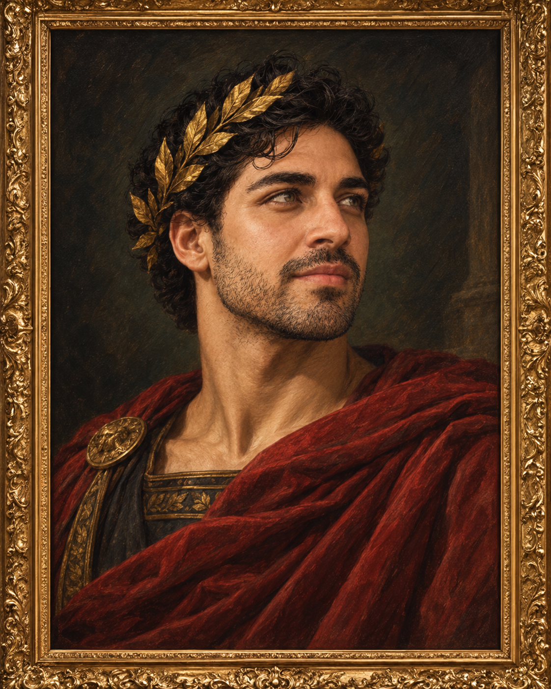

Adán MateoObra N.º 01
Cinco personas. Cinco obras. Un mismo proyecto.
Somos un equipo de estudiantes que convirtió la presentación personal del TP en una galería digital: cada integrante ocupa el lugar de una obra y el sitio combina creatividad, identidad grupal y desarrollo web.